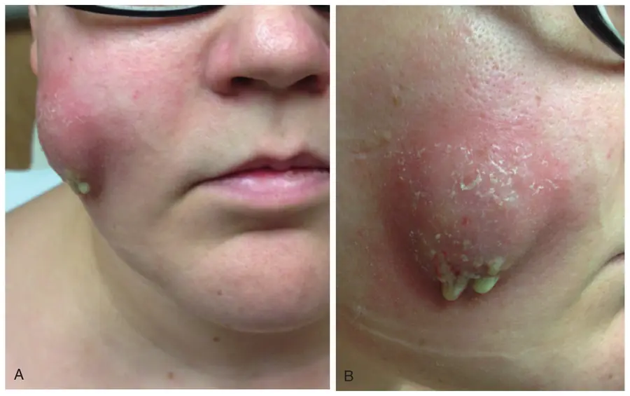
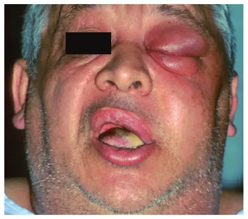

نسخه استخراجشده؛ ترجمه یا تأیید علمی انجام نشده است. وضعیت: captured
عفونتهای اوروفاسیال شایعترین دلیل مراجعهی بیماران به دندانپزشک و متخصص دندانپزشکیاند — و در درجهی اول ناشی از پوسیدگی دندانی، با پاتولوژی التهابی پریاپیکال که بالینی بهصورت درد و تورم بروز میکند.

ولی وقتی عفونت به فضاهای فاشیال عمقی گردن گسترش مییابد، پنج چیز اتفاق میافتد:
و در شدیدترین موارد: بهخطر افتادن راه هوایی. این سناریوهای بالینی فوری یا اورژانسی، نیازمند توجه و مدیریت بیدرنگاند.
و همین فهرست، ابزار غربالگری توست. بیماری که با تورم صورت آمده، سؤال اول تو این نیست که «کدام دندان»؛ سؤال اول این است: آیا صدایش عوض شده؟ آیا میتواند قورت بدهد؟ آیا آب دهانش میریزد؟
نکتهای هست که کمتر کسی جدی میگیرد: ارزیابی ظاهر عمومی بیمار میتواند بهمحض ورود او به اتاق معاینه شروع شود.

اگر بیمار مضطرب و ناراحت به نظر نمیرسد، و بدون دشواری راه میرود و حرف میزند، احتمال عفونت شدید چندان زیاد نیست.
و در سوی دیگر — چهار نشانهای که با هم «ظاهر توکسیک» را میسازند: بیمار خسته و بیحال به نظر میرسد، کار تنفسی افزایشیافته دارد، الگوی صدایش تغییر کرده، و نمیتواند ترشحاتش را مدیریت کند و آب دهانش میریزد. در این حالت بسیار محتمل است که یک عفونت شدید حاضر باشد.
و یک صدا که باید فعالانه گوشش کنی: استریدور. درمانگر باید به هرگونه صدای تنفسی با تُن بالا (استریدور) گوش دهد، که میتواند نشاندهندهی انسداد بخشی از راه هوایی باشد.
و ترتیب معاینه: پس از گرفتن علائم حیاتی، ظاهر عمومی، سپس معاینهی متمرکز سر و گردن که با مشاهده شروع میشود — جستوجوی دقیق برای تورم، عدم تقارن، و اریتم.
نواحی شایع تورم سر و گردن: تمپورال، اربیتال، نازولبیال، گونه، ناحیهی زاویهی مندیبل، و در امتداد لبهی تحتانی مندیبل.
هر ناحیه به یک فضا اشاره دارد: شقیقه ← تمپورال سطحی و عمقی، نازولبیال ← کانین، گونه ← باکال، زاویهی مندیبل ← ماستریک یا لترال فارنژیال، لبهی تحتانی مندیبل ← سابمندیبولار (و در خط وسط، سابمنتال).
و قاعدهی معاینه: هر ناحیهی تورم باید با لمس ملایم بررسی و قوامش توصیف شود.
و قوام، چهار حالت دارد که هر کدام معنای متفاوتی دارند:
پس اگر تورم را لمس نکنی، نصف اطلاعات را از دست دادهای. نگاه کردن به تورم به تو میگوید کجا؛ لمس کردنش به تو میگوید چقدر بد.